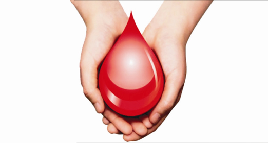

Donate Blood, Donate Life!
Blood: Red blood cells (RBCs), also called erythrocytes, are the most common type of blood cell and the vertebrate's principal means of delivering oxygen (O2) to the body tissues via blood flow through the circulatory system.
Platelets are a small colorless disk-shaped cell fragment without a nucleus, found in large numbers in blood and involved in clotting.
Plasma is the liquid part of your blood. It is the clear, yellowish liquid portion of blood that remains after the cells and cellular components have been removed which includes the red blood cells, white blood cells and platelets. Plasma is about 90% water and it makes up 55% of blood volume. Plasma contains cells, nutrients, proteins, enzymes, hormones, salts and more. Its primary objective is to move and transport material throughout the body to areas that are in need.